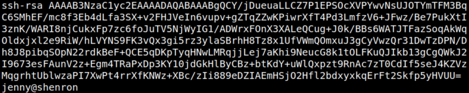

4.5 Connect via SSH
1. Try to connect via SSH as “jenny” user.
jenny@shenron:/var/www/html/joomla$ssh jenny@192.168.12.38
Output:
You can only access using a private key.
In linux, there is a file called
authorized keys with restrictive read and write permission. If you store our own public keys to that file, you should be able to login using your private key to the server.2. Create a “ssh key” with a blank passphrase using “ssh-keygen”.
jenny@shenron:/var/www/html/joomla$cd ~/.ssh
jenny@shenron:~/.ssh$ ssh-keygen
jenny@shenron:~/.ssh$ ssh-keygen
Press “Enter” in the three questions.
Output:
3. Show <Your public key>.
jenny@shenron:~/.ssh$cat id_rsa.pub
Output:

4. Copy the content to a new file.
jenny@shenron:~/.ssh$echo <<Your public key> >> authorized_keys
5. Connect via SSH.
jenny@shenron:~/.ssh$ssh jenny@192.168.12.38 -i ~/.ssh/id_rsa
Output: